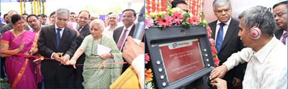
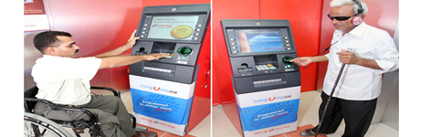
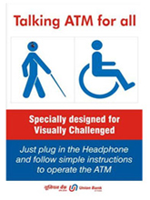

- Digi Purse
- Branch IMPS
- Mobile Passbook
- ATMs
- Talking ATMs
-
Remittance @ATMs

-
Internet Banking
-
Mobile Banking
- SMS Banking
- Kisan ATM
- Self ATM PIN Generation through IVR
TALKING ATMS

| Accessible and Talking ATM |
Union Bank of India’s Accessible and Talking ATM is one such example of technology innovation and careful consideration in bringing financial independence to persons with disabilities. Our Talking ATM solution has set a benchmark on accessible banking in India and provided financial access to blind persons in getting cash on their own anytime. Talking ATM also provides greater banking usability for the low vision, illiterate and aged population. On June 6th, 2012, we launched a “Truly Accessible Talking ATM” at Blind People's Association, Vastrapur, Ahmedabad. Bank’s first Talking ATM was inaugurated by our then Chairman & Managing Director Shri D. Sarkar.  Photos - Shri D. Sarkar, CMD inaugurating our first Talking ATM for the visually challenged and 4000th ATM in our ATM network at Blind People's Association, Vastrapur, Ahmedabad on June 6th, 2012. The advent of our Truly Accessible ATM made persons with disabilities independent in respect of personal financial matters. It provides complete accessibility to a wheelchair as well as to a visually challenged ATM user. Our Accessible and Talking ATM meets standards of Accessible and Talking ATM as per RBI guidelines. The launch of truly accessible solution of our Talking ATMs clearly shows our serious commitment to cater to the needs of all customers across segments. Inclusive design of Accessible and Talking ATM provides access to general public as well as to persons with disabilities. This ATM is part of our ATM brand “Sampurna ATM”. Many of our Talking ATM users who are persons with disabilities have given us feedback that they consider our Accessible and Talking ATM as an excellent model which is very user friendly as they can do ATM transactions independently.  Photos – a wheelchair and a visually challenged user using our Talking ATM Union Bank of India’s Accessible and Talking ATM has brought in many initiatives first time initiatives for Talking ATM in India. For example use of bilingual Indian accent Text-To-Speech (TTS) voices in English and Hindi, accessible infrastructure for physically disabled, complete voice guidance support for ATM operation for our bank as well as other banks ATM card transaction, IVR type very user friendly keypad based operation, verbal orientation at the start, braille labels, etc. User can use regular ATM card issued by banks. No special ATM card is needed to enable talking mode. We have also taken care of security and privacy of ATM operation for a visually challenged person through voice guidance which will be heard privately through a headphone and user has a choice to hide ATM screen. We have made a small demo video wherein a visually challenged user is shown doing an ATM transaction with hidden screen and giving explanation on what he is doing according to voice guided instructions. Download Talking ATM video clip Continuing our work on Talking ATMs we have done similar development of solution with other global ATM manufacturers. We have developed two fully accessible ATM sites in the premises of national organizations working for persons with disabilities - Blind People’s Association (BPA), Ahmedabad and National Association for the Blind, Delhi. ATM next to NAB Workshop for the Blind, Worli, Mumbai is also upgraded as Talking ATM.  Testimonials “The first Talking bilingual accessible ATM that has been installed by the Union Bank of India at the BPA, Vastrapur, Ahmedabad is one such example of what true accessibility in an ATM really is. We commend the efforts of Union Bank of India in taking this step forward which will impact the banking industry and how it views accessibility and the lives of persons with disabilities”. - Dr. Sam Taraporevala, Director, XRCVC and Head, Dept. of Sociology, St. Xavier’s College, Mumbai. (Dr. Taraporevala is advocating for Talking ATMs in India since 2009. He visited our Talking ATM site on June 9, 2012). “I was very impressed indeed by your 'Talking' ATM and can certify that I undertook a number of operations successfully.” - Kevin Carey, Chair, Royal National Institute of Blind People (RNIB), UK. (On 23 April 2013 Mr. Carey visited our Talking ATM situated at our bank’s head office building.) Recognitions
Awareness We are also spreading awareness and sensitizing society which is one of the key needs along with the developing accessible solutions and products. We have produced high quality Audio-Visual on Talking ATM FOR ALL which is uploaded on
Union Bank is playing a leadership role in the financial services for visually challenged customers and has set a standard on Talking ATMs in India. We are constantly engaged in spreading awareness and positively impacting lives of persons with disabilities in many ways through our Talking ATM for All initiative. |